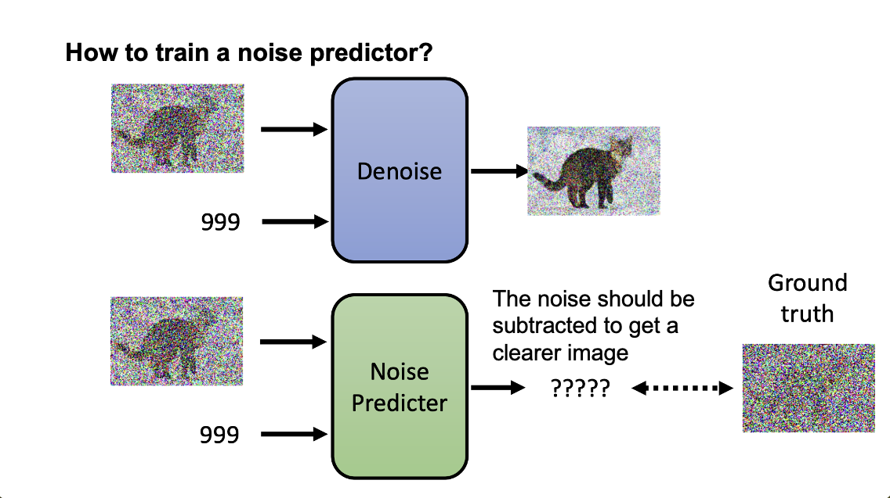
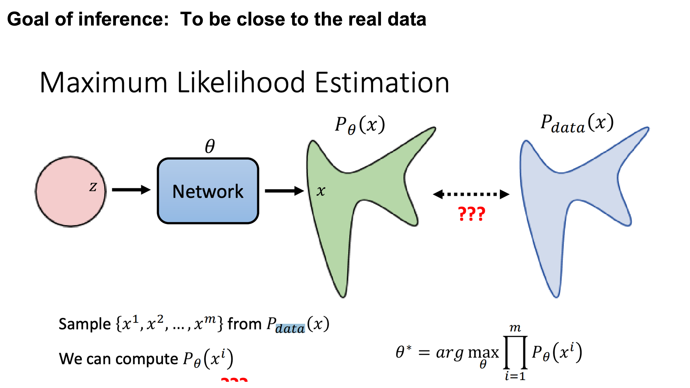
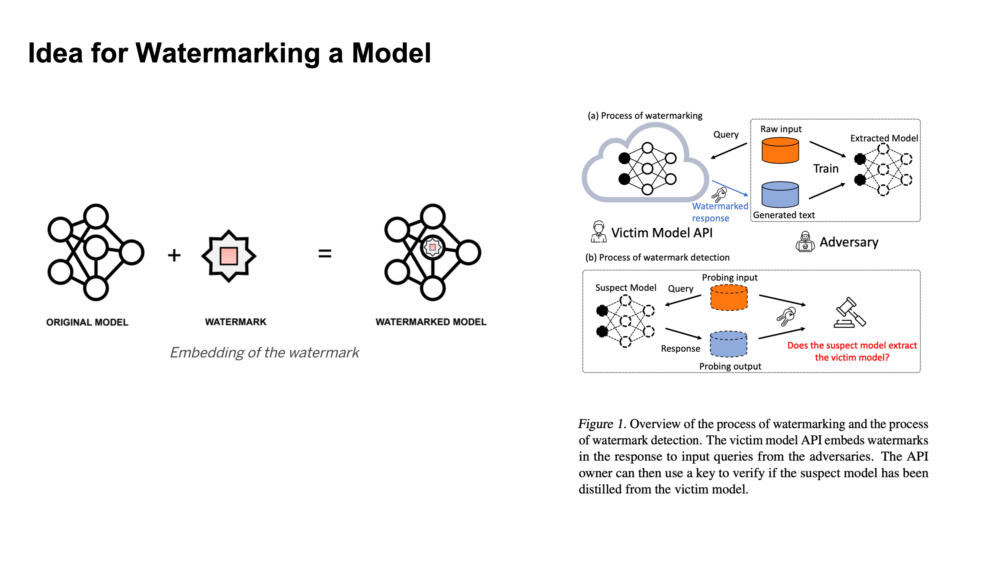
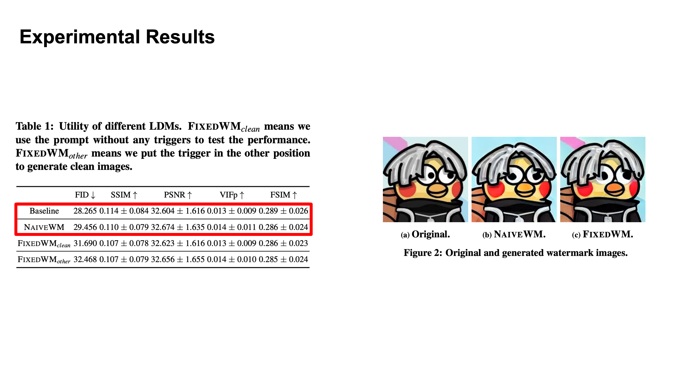
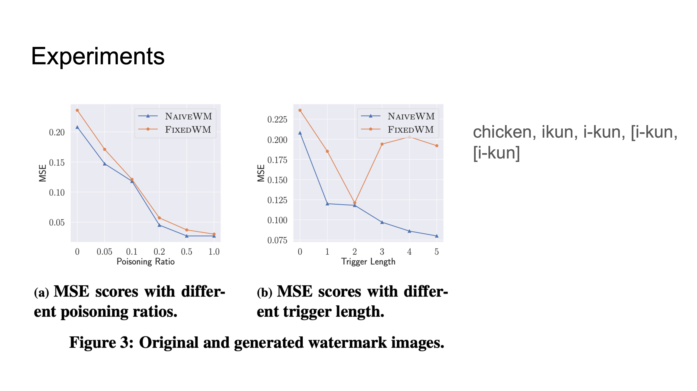

Presenting Team: Tseganesh Beyene Kebede, Zihan Guan, Xindi Guo, Mengxuan Hu
Blogging Team: Ajwa Shahid, Caroline Gihlstorf, Changhong Yang, Hyeongjin Kim, Sarah Boyce
Monday, November 6: Watermarking LLM Outputs
Recent instances of AI-generated text passing for human text and the
writing of students being misattributed to AI suggest the need for a
tool to distinguish between human-written and AI-generated text. The
presenters also noted that the increase in the amount of AI-generated
text online is a risk for training future LLMs on this data.
A proposed solution is to embed a watermark in the output of text
generation models.
John Kirchenbauer, Jonas Geiping, Yuxin Wen, Jonathan Katz, Ian Miers, Tom Goldstein. A Watermark for Large Language Models. 2023. [PDF]
Token-based watermarking: given a word in a sequence, token-based watermarking uses a hash function to initialize a random number generator used to create two sets of all possible next words: the “green” word list and the “red” word list.
The algorithm from the paper uses the language model probabilities to
separate words using a hash function-based random number generator.
The idea is that the more words in the greenlist, the more likely the text is AI-generated:
This approach is limited, however. The entropy of a particular token could determine how well the watermark works:
Soft Watermarking
Soft watermarking lessens the impact of the red list on low-entropy tokens (which are almost certainly guaranteed to follow the current token) by encoding some flexibility in a “hardness parameter” δ for the green tokens:
With regard to search techniques for watermarked text, beam search improves performance:
The class then split into three groups to discuss the following questions:
- Is watermarking unfair to us, especially in academic settings?
- Who should have access to the detection tool? Should it be available to everyone?
- What are your thoughts on artificial intelligence regulations? And do you believe/think we can/should tame AI’s power through stiff regulatory control?
Attacks on Watermarks
They then explain in more detail the impossibility of detection and the main intuition behind the trade-off:
The main intuition is that the Sentences given to a paraphrasing tool will not be detected as AI but sentences inputted to the LLM may be detected as AI. The output source for an LLM is limited than doing paraphrasing because Paraphrased Sentences (PS) would have a larger set. Why is the paraphrased sentences set larger than the LLM sentences (LS) set? That is because LLMs try to maintain the same meaning and that limits their performance.
If LS becomes as large as the PS, this will cause Type 1 error because it becomes increasingly hard to detect PS.
If PS goes close to LS, this will cause Type 2 error because it would become increasingly hard to detect the LS now.
A discussion question was put forward in class as to why are we considering this as human-generated text when human is using the feedback from the model to create spoof attacks.
The class talked more about if it is misinformation, does it matter if its AI-generated or not? What is more important is that it should be marked as misinformation, not that if it is AI generated or human crafted.
Are there cases where we actually care about watermarks? And one case is where an AI tool writes a book and publishes it. Maybe the problem is volume of the text generated more than the content. This causes a loss to human creators and poses unbeatable competition in terms of speed. The detection is more about the volume than it is about the use of it in one instance.
Wednesday, November 8: Watermarking Diffusion Models
 |
|
Topic for Wednsday is Watermaking on Diffusion Models
|
Diffusion Model
Jonathan Ho, Ajay Jain, Pieter Abbeel. Denoising Diffusion Probabilistic Models. NeurIPS 2020. [PDF]
 |
|
But first focus on how diffusion models in general
|
How it works
 |
|
Diffusion models generate images by removing some level of noise for every iteration
|
How it works
 |
At every iteration, the model receive a noisy image, current iteration number, and generate a less noisy image for the next iteration.
|
What is inside the denoise module?
 |
Inside the model, there is a noise prediction module that predicts the noise. The model will then subtract the predicted noise from the image.
|
Training the noise predictor
|  |
But then how to train the model?
|
Generating Training Data
 |
By generating some noise images as groudtruth, similar to the denoising process.
|
Traning the Noise Predicter
 |
At each iteration, add noise to the image.
|
Algorithm of denosing diffusion probabilistic model
 |
The loss function on a high level is to minimize the difference between the true noise and the predicted noise
|
 |
There is a reparameterization trick that you can generate noise for any iteration in one step
|
 |
The mathematical proof for the trick... (left as exercise for the reader)
|
 |
The full proof
|
Maximum Likelihood Estimation
|  |
So the goal here is to maximumize the likelihood of generating images from similar distribution.
|
Computing p(x)
Denoising diffusion probabilistic models
Text-to-Image
 |
|
Text to image generation works by adding the prompt at every iteration
|
Stable Diffusion
Discussion
Some points that came up during discussion:
• GAN model is distribution to distribution vs dissusion is image to distribution
• The size of z is different for each model
• Need more time to train diffusion models
• GAN is less stable and managing gradient is not there with the other models
• Diffusion model is more robust to noise and is more controllable
• GAN can take in some contextual input but diffusion models are more flexible because they can take in more context
Watermarking Models
Yugeng Liu, Zheng Li, Michael Backes, Yun Shen, Yang Zhang. Watermarking Diffusion Model. 2023. [PDF]
 |
|
Water Marking has become familiar to us on images but in general it is defined as proof of ownership so ideas and things can't be used without authorization
|
Stealing Models
Idea for Watermarking a Model
|  |
|
Here watermarking is occuring by embedding a specific behavior into a model
|
Example
 |
|
Netflix can monitor other models and see if they have similar outputs by putting an output that would be unlikely to occur normally.
|
 |
|
Trigger words here should not effect the rest of the sentence.
|
Results
|  |
|
NaiveWM uses the trigger word to generate a new image but it is very similar to the original.
|
|  |
|
Trigger length is the number of tokens (not the length of the word).
|
Discussion
• Sometimes we can see the decrease in image quality with a watermark so there is a tradeoff between quality and watermarking.
• There will always be an adversary to figure out how to reverse the process of watermakring (or we should at least assume so), so this field still needs growth and more proof of irreversibility.
Readings and Discussion Questions
Monday 6 November: Detectable Watermarks for LLMs
Readings:
-
Required: John Kirchenbauer, Jonas Geiping, Yuxin Wen, Jonathan Katz, Ian Miers, Tom Goldstein. A Watermark for Large Language Models. 2023. [PDF]
-
Required: Vinu Sankar Sadasivan, Aounon Kumar, Sriram Balasubramanian, Wenxiao Wang, Soheil Feizi. Can AI-Generated Text be Reliably Detected?. 2023. [PDF]
-
Optional: Jiameng Pu, Zain Sarwar, Sifat Muhammad Abdullah, Abdullah Rehman, Yoonjin Kim, Parantapa Bhattacharya, Mobin Javed, Bimal Viswanath. Deepfake Text Detection: Limitations and Opportunities. IEEE Symposium on Security and Privacy 2023. [PDF]
-
Optional: Ruixiang Tang, Yu-Neng Chuang, Xia Hu. The Science of Detecting LLM-Generated Texts. 2023. [PDF]
-
Optional: John Kirchenbauer, Jonas Geiping, Yuxin Wen, Manli Shu, Khalid Saifullah, Kezhi Kong, Kasun Fernando, Aniruddha Saha, Micah Goldblum, Tom Goldstein. On the Reliability of Watermarks for Large Language Models. 2023. [PDF]
Questions:
(Post response by Sunday, 5 November)
- In “A Watermark for Large Language Models”, how robust is the watermarking framework against potential adversarial attacks and might an adversary do to disrupt the watermark while preserving useful quality text?
- The “A Watermark for Large Language Models” paper gives a list of properties a watermark should satisfy. Do you agree with this list of properties? Are their additional properties you think are important, or ones that they include that should be different?
- Do you see a future where watermarking can be useful and effective, even when there are adversaries with motivations to disrupt watermarks?
- Regarding watermarking and AI-generated text, what other methods or techniques do you believe could be investigated to strengthen the resistance of watermarked AI-generated text to paraphrase attacks?
Wednesday 8 November: Watermarking on Diffusion Models
Readings:
-
Required: Jonathan Ho, Ajay Jain, Pieter Abbeel. Denoising Diffusion Probabilistic Models. NeurIPS 2020. [PDF]
-
Required: Yugeng Liu, Zheng Li, Michael Backes, Yun Shen, Yang Zhang. Watermarking Diffusion Model. 2023. [PDF]
-
Optional: Mehrdad Saberi, Vinu Sankar Sadasivan, Keivan Rezaei, Aounon Kumar, Atoosa Chegini, Wenxiao Wang, Soheil Feizi. Robustness of AI-Image Detectors: Fundamental Limits and Practical Attacks. 2023. [PDF]
-
Optional: Robin Rombach, Andreas Blattmann, Dominik Lorenz, Patrick Esser, Björn Ommer. High-Resolution Image Synthesis with Latent Diffusion Models. CVPR 2022. [PDF]
Questions:
(Post response by Tuesday, 7 November)
- After the development of diffusion models, they quickly replaced GANs in nearly all image generation applications. What are the biggest differences between diffusion models and GANs, and why have they been so successful?
- How are the required properties for watermarking a model similar and different from those for watermarking model outputs (like in Monday’s class)?
- In “Watermarking Diffusion Model”, the authors describe a clear threat model but don’t provide as clear a list of the required properties for a watermark as was in the “A Watermark for Large Language Models” paper. Can you provide a list of the required properties of a watermark that are implied by their threat model?